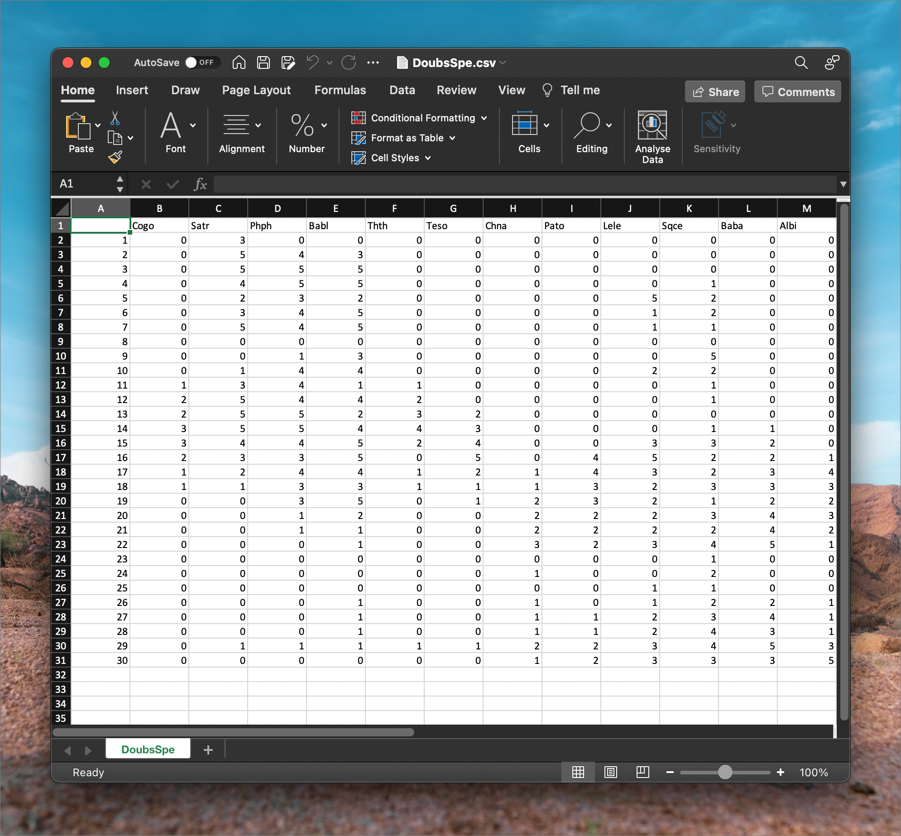
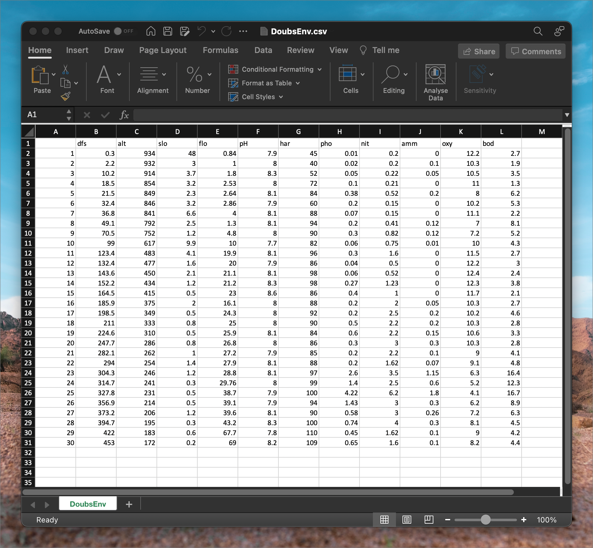
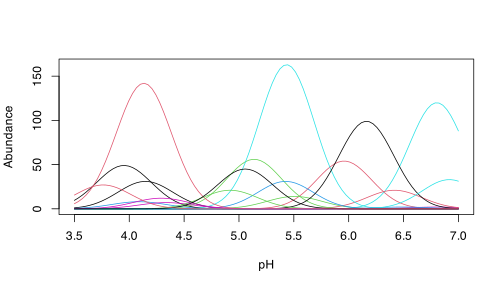
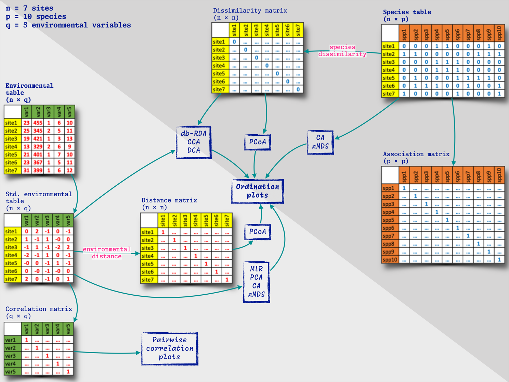
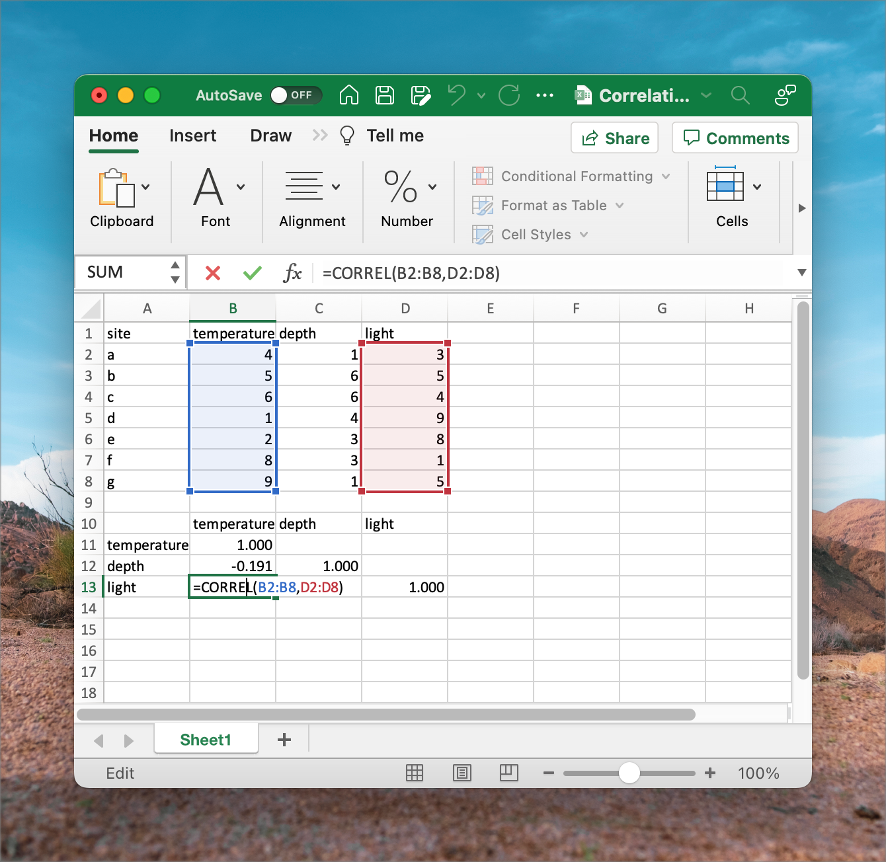

This course is about community ecology across different spatial and temporal scales. Community ecology underpins the vast fields of biodiversity and biogeography and concerns spatial scales from square meters to all of Earth. We can look at historical, contemporary, and future processes implicated in shaping the distribution of life on our planet.
Ecologists tend to analyse how multiple environmental factors act as drivers that influence the distribution of tens or hundreds of species. These data often are messy and statistical considerations need to be understood within the context of the available data.
Up to 20 years ago, ecologists focused on populations (the dynamics of individuals of one species interacting among each other and with their environment) and communities (collections of multiple populations, how they interact with each other and their environment, and how this affects the structure and dynamics of ecosystems). This is a modern development of ecology. But ecologists have expanded their horizon regarding the questions they now seek answers for. Today, macroecology offers a broadened view of ecology. Macroecologists seek to find the geographical patterns and processes in biodiversity across all spatial scales, from local to global, across time scales from years to millennia, and across all taxonomic hierarchies (from genetic variability within species up to major higher-level taxa, such as families and orders). It attempts to arrive at a unifying theory for ecology across all of these scales—e.g. one that can explain all patterns in structure and functioning from microbes to blue whales. Perhaps most importantly, it attempts to offer mechanistic explanations for these patterns. At the heart of all ecological answers are also deep insights stemming from understanding evolution (facilitated by the growth of phylogenetic datasets—see below).
On a basic data analytical level, population ecology, community ecology, and macroecology all share the same approach regarding the underlying data. We start with data representing the species and the associated environmental conditions at a selection of sites (called species tables and environmental tables). The species tables are then converted to dissimilarity matrices and the environmental tables to distance matrices. From here, basic analyses can offer insights into how biodiversity is structured, e.g. species-abundance distributions, occupancy-abundance curves, species-area curves, distance decay curves, and gradient analyses(as seen in Shade et al. 2018). In the Labs, we will explore some of these properties.
Ecological data
Properties of ecological datasets
Ecological data capture properties of the environment and properties of communities. They are typically stored as separate datasets, but they are analysed together.
These data sets are usually arranged in a matrix. In the case of community composition, a matrix has species (or higher level taxa whose resolution depends on the research question) arranged down columns and samples (typically the sites, stations, transects, time, plots, etc.) along rows. We call this a sites × species table. In the case of environmental data, a matrix is a site × environment table. The term ‘sample’ denotes the basic unit of observation. Samples on a map may be quadrats, transects, stations, locations, traps, seine net tows, trawls, grids cells, etc. It is essential to be unambiguous about the basic unit of the samples.
The Doubs River data
An obvious example of environmental and species datasets is the Doubs River dataset. Please refer to David Zelený’s website for an explanation of these data. The primary publication outlining this study is Verneaux (1973), and an example analysis is provided by Borcard et al. (2011). These data demonstrate how one of the basic mechanisms of biodiversity patterning—gradients—can be seen operating in a real-world case study. It offers keen insight also into the properties of species and environmental tables and the dissimilarity and distance matrices derived from them.
Looking at the files’ content
These data are available in CSV format, but we can open and view it in MS Excel. ‘CSV’ means comma separated value. It is a plain text file that can be edited in any text editor (such as Notepad on MS Windows, or VS Code, VIM, emacs, etc. on all platforms). Figure 1 shows what a CSV file looks like in a plain text editor, VS Code, on my computer. Once imported, it will look similar to the one seen in Figure 3.
Figure 1: View of a CSV file inside VS Code.
Note about CSV files and MS Excel
CSV is a standard format used in the scientific disciplines as it is compatible with many software. Globally, scientists use a period ‘.’ as a decimal point separator. You can see this in the file above. Commas are used exclusively as field separators (you’ll see separate columns once opened in MS Excel).
CSV files create a bit of a problem for South Africans, who are indoctrinated from a young age to use commas as a decimal point separators—this is to conform with the regional (South African) expectation that dictates commas be used as decimals. So, when you import a CSV file for the first time, you’ll likely see gibberish because your computer will probably be set up to honour the regional (locale) the expectation of commas as decimal points (and ‘R’ for currency, metric units of measurements, etc.). So, you need to know how to fix this to prevent upsetting me (it is a pet peeve and frustrates me endlessly) and yourselves.
Fixing this annoyance is not too tricky, as is demonstrated here. Follow the instruction under ‘Changing commas to decimals and vice versa by changing Excel Options’. Better still, change the global system settings, as the same article explains. Do this before importing the CSV file.
After importing the Doubs River data, we see something that resembles the following two figures. First, in DoubsSpe.csv, we see the table (or spreadsheet) view of the species data. The species codes for 27 species of fish appear as column headers (not all species’ data are visible as the data are truncated to the right) and in rows 2 through 31 (30 rows) are each of the samples—in this case, there is one sample per site down the length of the river (Figure 2).

Figure 2: The Doubs River species data seen in MS Excel.
DoubsEnv.csv contains the environmental data, as seen in the following figure. The names of the 11 environmental variables appear as column headers, and there are 30 rows, one for each of the samples—the samples match that of the species data (Figure 3).

Figure 3: The Doubs River environmental data in MS Excel.
Species data may be recorded as various kinds of measurements, such as presence/absence data, biomass, frequency, or abundance. ‘Presence/absence’ of species simply tells us the species is there or is not there. It is binary. ‘Abundance’ generally refers to the the number of individuals per unit of area, volume. ‘Per cent cover’ refers to the proportion of a covered by a species. Per cent cover is used for vegetation, some encrusting species of animals (e.g. sponges), or organisms such as oysters or mussels that can be too numerous to count but whose abundance can be estimated as filling a portion of a sampling unit such as a quadrat. ‘Biomass’ refers to the species’ mass per unit of area or volume. The type of measure will depend on the taxa and the questions under consideration. The critical thing to note is that all species have to be homogeneous in terms of the metric used to quantify them (i.e. all of it as presence/absence, or abundance, or biomass, not mixtures of them). The matrix’s row vectors are the species composition for the corresponding sample. That is to say, a row runs across multiple columns, which tells us that the sample is comprised of all the species whose names are given by the column titles. Note that in the case of the data in the above figures, it is often the case that there are 0s, meaning that not all species are present at all sites. Species composition is frequently expressed in relative abundance, i.e. constrained to a constant total such as 1 or 100%, or biomass, where the upper limit might be arbitrary.
The environmental data may be heterogeneous, i.e. the units of measure may differ among the variables. For example, pH has no units, the concentration of some nutrients has a unit of (typically) μM, elevation may be in meters, etc. Because these units have different magnitudes and ranges, we may need to standardise them. To standardise data, we subtract the mean of each column from each data point in the column and then divide each of the resultant values by the standard deviation of the columns.
Lab 1
(To be reviewed by BCB743 student but not for marks)
Standardise the Doubs River environmental data in MS Excel.
Properties of species datasets
Many community data matrices share some general characteristics:
Most species occur only infrequently. The majority of species might typically be represented at only a few locations (where they might be pretty abundant). Or some species are simply rare in the sampled region (i.e. when they are present, they are present at a very low abundance). This results in sparse matrices where the bulk of the entries consists of zeros.
Ecologists tend to sample a multitude of factors that they think influence species composition, so the matching environmental data set will also have multiple (10s) columns that will be assessed in various hypotheses about the drivers of species patterning across the landscape. For example, fynbos biomass may be influenced by the fire regime, elevation, aspect, soil moisture, soil chemistry, edaphic features, etc. These datasets are called multi-dimensional matrices, with the ‘dimensions’ referring the the many species or environmental variables.
Even though we may capture a multitude of information about many environmental factors, the number of important ones is generally relatively low—i.e. a few factors can explain the majority of the explainable variation, and it is our intention to find out which of them is most important.
Much of the signal may be spurious, i.e. the matrices have high noise. Variability is a general characteristic of the data, which may result in emerging false patterns. This is because sampling may capture a considerable amount of stochasticity that may mask the actual pattern of interest. Imaginative and creative sampling may reveal some of the ecological patterns we are after, but this requires long years of experience and is not something that can easily be taught as part of our module.
There is a significant amount of collinearity. This means that many correlated explanatory variables can explain patterning, but only a few act in a way that implies causation. Collinearity is something we will return to later on.
Ecological gradients
Although there are many ways in which species can respond to their environment, one of the most striking responses can be seen along with environmental gradients. Next, we will explore this concept by discussing coenoclines and unimodal species distribution models.
Coenoclines, coenoplanes, and coenospaces
A coenocline is a graphical display of all species response curves (see definition below) simultaneously along one environmental gradient. It aids our understanding of the species response curve if we imagine the gradient operating in only one geographical direction. The coenoplane concept extends the coenocline to cover two gradients. Again, our visual representation can be facilitated if the two gradients are visualised orthogonal (in this case, at right angles) to each other (e.g. east-west and north-south) and do not interact. A coenospace complicates the model substantially, as it can allow for an unspecified number of gradients to operate simultaneously on multiple species simultaneously. It will probably also capture interactions of environmental drivers on the species.
library(coenocliner)set.seed(2)M<-20# number of speciesming<-3.5# gradient minimum...maxg<-7# ...and maximumlocs<-seq(ming, maxg, length =100)# gradient locationsopt<-runif(M, min =ming, max =maxg)# species optimatol<-rep(0.25, M)# species tolerancesh<-ceiling(rlnorm(M, meanlog =3))# max abundancespars<-cbind(opt =opt, tol =tol, h =h)# put in a matrixmu<-coenocline(locs, responseModel ="gaussian", params =pars, expectation =TRUE)matplot(locs, mu, lty ="solid", type ="l", xlab ="pH", ylab ="Abundance")

Figure 4: A coenocline.
Above is an example of a coenocline using simulated species data. It demonstrates an important idea: that of unimodal species distributions (Figure 4).
set.seed(10)N<-30# number of samplesM<-20# number of species## First gradientming1<-3.5# 1st gradient minimum...maxg1<-7# ...and maximumloc1<-seq(ming1, maxg1, length =N)# 1st gradient locationsopt1<-runif(M, min =ming1, max =maxg1)# species optimatol1<-rep(0.5, M)# species tolerancesh<-ceiling(rlnorm(M, meanlog =3))# max abundancespar1<-cbind(opt =opt1, tol =tol1, h =h)# put in a matrix## Second gradientming2<-1# 2nd gradient minimum...maxg2<-100# ...and maximumloc2<-seq(ming2, maxg2, length =N)# 2nd gradient locationsopt2<-runif(M, min =ming2, max =maxg2)# species optimatol2<-ceiling(runif(M, min =5, max =50))# species tolerancespar2<-cbind(opt =opt2, tol =tol2)# put in a matrix## Last steps...pars<-list(px =par1, py =par2)# put parameters into a listlocs<-expand.grid(x =loc1, y =loc2)# put gradient locations togethermu2d<-coenocline(locs, responseModel ="gaussian", params =pars, extraParams =list(corr =0.5), expectation =TRUE)layout(matrix(1:4, ncol =2))op<-par(mar =rep(1, 4))for(iinc(2,8,13,19)){persp(loc1, loc2, matrix(mu2d[, i], ncol =length(loc2)), ticktype ="detailed", zlab ="Abundance", theta =45, phi =30)}
A coenoplane is demonstrated above (Figure 5). We see idealised surfaces (smooth models), and the ‘raw’ species counts are obscured. Plotting the actual count data looks messier (Figure 6).
Species response curves
Plotting the abundance of a species as a function of position along a the gradient is called a species response curve. If a long enough the gradient is sampled, a species typically has a unimodal response (one peak resembling a Gaussian distribution) to the gradient. Although the idealised Gaussian response is desired (for statistical purposes, largely), in nature, the curve might deviate quite noticeably from what’s considered ideal. It is probable that a perfectly normal species distribution along a gradient can only be expected when the gradient is perfectly linear in magnitude (seldom true in nature), operates along only one geographical direction (unlikely), and all other potentially additive environmental influences are constant across the ecological (coeno-) space (also not a realistic expectation).
Unimodal species response
The unimodal model is an idealised species response curve (visualised as a coenocline) where a species has only one mode of abundance. In this species response curve, the species has one optimal environmental condition where it is most abundant (the fewest ecophysiological and ecological stressors). If any aspect of the environment is suboptimal (greater or lesser than the optimum), the species will perform more poorly and have a lower abundance. The unimodal model offers a convenient heuristic tool for understanding how species can become structured along environmental gradients.
Exploring data
At the start of the analysis, before we go deeper into the patterns in the data, we need to explore the data and compute the various synthetic descriptors. This might involve calculating means and standard deviations for some of the variables we feel are most important. So, we say that we produce univariate summaries, and if there is a need we may also create some graphical summaries like line plots or frequency histograms. Be guided by the research questions as to what is required. Typically, I don’t like to produce too many detailed inferential statistics of the univariate data (there are special statistical techniques available that allow us to do so more efficiently and effectively, but we will get to it in the Honours Module Quantitative Ecology), choosing instead to see which relationships and patterns emerge from the exploratory summary plots before testing their statistical significance using multivariate approaches. But that is me. Sometimes, some hypotheses call for a few univariate inferential analyses (again, this is the topic of an Honours module on Biostatistics).
Lab 1 (continue)
(To be reviewed by BCB743 student but not for marks)
Create an \(x-y\) plot of the geographical coordinates in DoubsSpa.csv.
Using some graphs that plot the trends of the Doubs River environmental variables along the length of the river, describe the patterns in some of the environmental variables and offer explanations for how they might be responsible for affecting species distributions down the length of the Doubs River. Which three variables do you think will be able to explain the trends in the species data?
Pairwise matrices
Although we typically start our forays into data exploration using sites × species and sites × environment tables, the formal statistical analyses usually require ‘pairwise association matrices.’ Such matrices are symmetrical (sometimes only the lower or upper triangle is displayed) square matrices (i.e. \(n \times n\)). These matrices tell us how related any sample is to any other sample in our pool of samples (i.e. relatedness among rows with respect to whatever populates the columns, be they species information of environmental information).
Let us consider various kinds of distance matrices under the headings Distances, Correlations, Associations, Similarities, and Dissimilarities.
Distances
A frequently used distance metric is Euclidian distance. Euclidian distance is the ‘ordinary straight-line’ distance between two points in Euclidian space. Working with geographical coordinates over small areas of Earth’s surface, Euclidian distance is very similar (i.e. almost directly proportional) to the actual geographical distance, so the concept is intuitive to understand. In its simplest form, it is a planar Cartesian area, which you know of as a graph with \(x\)- and \(y\)-axes). So, in 2D and 3D space, it gives distances in Cartesian units between points on a plane \(x\), \(y\) or in volume \(x\), \(y\), \(z\); a linear relationship exists between the units in the physical realm and the units in Euclidian space. The implication is that on a map or graph, short distances between pairs of points indicate that there are also short geographic distances between these points on Earth.
Euclidian distance is calculated using the Pythagorean theorem, and it is typically applied to standardised environmental data (not species data):
In the above equation, this ‘distance’ is calculated between a pair of sites, a and b, whose locations are marked by the coordinates \(x\), \(y\), and \(z\)—i.e. this is an example of 3-dimensional data (a space or volume, as opposed to 2D data situated on a \(x\), \(y\) place). We might also call each coordinate a ‘variable’ such as temperature, depth, or light intensity (sometimes also called ‘dimensions’ of environmental space).
In the example dataset downloaded earlier (Euclidian_distance_demo_data_xyz.csv), we can calculate the distance between every pair of sites named a to g. The ‘raw’ data representing \(x\), \(y\) and \(z\) dimensions can be viewed in MS Excel, as we see in Figure 7.
Figure 7: Data representing three dimensions, \(x\), \(y\), and \(z\).
We can substitute \(x\), \(y\) and \(z\) for environmental ‘dimensions,’ and we have a set of data that resembles what we see in Figure 8. Regardless of whether we have \(x\), \(y\) and \(z\) or environmental dimensions, the application of the Pythagorean Theorem is the same.
Figure 8: Data representing three environmental ‘dimensions.’
Figure 9 shows how we may calculate Euclidian distance in MS Excel uses some built-in functions. To produce the pairwise matrix, you’d have to do this for every pair of sites. As a minimum, calculate the bottom left triangle. For completeness, calculate the diagonal, which will be all zeros in this instance.

Figure 9: Calculating Euclidian distance in MS Excel.
Correlations
We use correlations to establish how environmental variables relate across the sample sites. Therefore, a correlation performed to a sites × variable table is done between columns (variables), not rows, as in the Euclidian distance calculation, which compares the rows (sites). We do not need to standardise as one would for calculating Euclidian distances (but it will do no harm if you do). Correlation coefficients (so-called \(r\)-values) vary in magnitude from -1 (a perfect inverse relationship) from 0 (no relationship) to 1 (a perfect positive linear relationship).

Figure 10: Calculating pairwise correlations between environmental variables in MS Excel.
The resultant pairwise correlation matrix shows the names of the environmental variables as both column and row names. Contrast this with what is presented as row and column names in the distance matrix (Figure 10).
Associations, similarities, and dissimilarities
Thus far, we have worked with environmental data. Associations, similarities, and dissimilarities extend the pairwise matrix to species data. We will discuss and calculate these matrices in Lab 3.
That’s it for this week, Folks! I’ll leave you with some lovely exercises to take you through the rest of the week.
Lab 1 (continue)
(To be reviewed by BCB743 student but not for marks)
Using the Doubs River environmental data, calculate the lower left triangle (including the diagonal) distance matrix for every pair of sites in Sites 1, 3, 5, …, 29 (i.e. using only every second site). Explain any patterns or trends in this resultant distance matrix regarding how similar/different sites are relative to each other. Which of the graphs you came up with in Task 3 (if any) do you think are responsible for the patterns seen in the distance matrix?
Using the same sites as above (Question 4), calculate a pairwise correlation matrix (lower left and including the diagonal) for the Doubs River environmental data. Explain any patterns or trends in this resultant correlation matrix and offer mechanistic explanations for why these correlations might exist.
Discuss in detail the properties of distance and correlation matrices.
If you found this exercise annoying, explain why. Or if you loved it, state why. What could be done to ease your experience of the calculations?
Submission instructions
The Lab 1 assignment on Ecological Data was discussed on Monday 1 August and is due at 07:00 on Monday 8 August 2022.
Provide a neat and thoroughly annotated MS Excel spreadsheet which outlines the graphs and all calculations and which displays the resultant distance matrix. Use separate tabs for the different questions. Written answers must be typed in an MS Word document. Please follow the formatting specifications precisely shown in the file BDC334 Example essay format.docx that was circulated at the beginning of the module. Feel free to use the file as a template.
Please label the MS Excel and MS Word files as follows:
BDC334_<first_name>_<last_name>_Lab_1.xlsx, and
BDC334_<first_name>_<last_name>_Lab_1.docx
(the < and > must be omitted as they are used in the example as field indicators only).
Submit your appropriately named spreadsheet and MS Word documents on iKamva when ready.
Failing to follow these instructions carefully, precisely, and thoroughly will cause you to lose marks, which could cause a significant drop in your score as formatting counts for 15% of the final mark (out of 100%).
References
Borcard D, Gillet F, Legendre P, others (2011) Numerical ecology with R. Springer
Shade A, Dunn RR, Blowes SA, Keil P, Bohannan BJ, Herrmann M, Küsel K, Lennon JT, Sanders NJ, Storch D, others (2018) Macroecology to unite all life, large and small. Trends in Ecology & Evolution 33:731–744.
Verneaux J (1973) Cours d’eau de Franche-Comté (Massif du Jura). Recherches écologiques sur le réseau hydrographique du Doubs.
---date: "2022-08-01"title: "1. Ecological Data"subtitle: "A look at environmental data"---> *"A scientific man ought to have no wishes, no affections, -- a mere> heart of stone."*>> --- Charles Darwin::: callout-note## BCB743**This material must be reviewed by BCB743 students in Week 1 of Quantitative Ecology.**:::::: callout-tip## Data for this LabThe Doubs River [@verneaux1973cours; @borcard2011numerical] and toy data are at the links below:- The environmental data -- [`DoubsEnv.csv`](../data/DoubsEnv.csv)- The species data -- [`DoubsSpe.csv`](../data/DoubsSpe.csv)- The spatial data -- [`DoubsSpa.csv`](../data/DoubsSpa.csv)- Example xyz data -- [`Euclidian_distance_demo_data_xyz.csv`](../data/Euclidian_distance_demo_data_xyz.csv):::## About Macroecology**This course is about community ecology across different spatial andtemporal scales.** Community ecology underpins the vast fields ofbiodiversity and biogeography and concerns spatial scales from squaremeters to all of Earth. We can look at historical, contemporary, andfuture processes implicated in shaping the distribution of life on our planet.Ecologists tend to analyse how multiple environmental factors act asdrivers that influence the distribution of tens or hundreds of species.These data often are messy and statistical considerations need tobe understood within the context of the available data.Up to 20 years ago, ecologists focused on populations (the dynamics of individuals of one species interacting among each other and with their environment) and communities (collections of multiple populations, how they interact with each other and their environment, and how this affects the structure and dynamics of ecosystems). This is a modern development of ecology. But ecologists have expanded their horizon regarding the questions they now seek answers for. Today, **macroecology** offers a broadened view of ecology. Macroecologists seek to find the geographical patterns and processes in biodiversity across all spatial scales, from local to global, across time scales from years to millennia, and across all taxonomic hierarchies (from genetic variability within species up to major higher-level taxa, such as families and orders). It attempts to arrive at a unifying theory for ecology across all of these scales---e.g. one that can explain all patterns in structure and functioning from microbes to blue whales. Perhaps most importantly, it attempts to offer mechanistic explanations for these patterns. At the heart of all ecological answers are also deep insights stemming from understanding evolution (facilitated by the growth of phylogenetic datasets---see below). On a basic data analytical level, population ecology, community ecology, and macroecology all share the same approach regarding the underlying data. We start with data representing the species and the associated environmental conditions at a selection of sites (called **species tables** and **environmental tables**). The species tables are then converted to **dissimilarity matrices** and the environmental tables to **distance matrices**. From here, basic analyses can offer insights into how biodiversity is structured, e.g. **species-abundance distributions**, **occupancy-abundance curves**, **species-area curves**, **distance decay curves**, and **gradient analyses** [as seen in @shade2018macroecology]. In the Labs, we will explore some of these properties.## Ecological data### Properties of ecological datasetsEcological data capture properties of the environment and propertiesof communities. They are typically stored as separate datasets, butthey are analysed together.These data sets are usually arranged in a **matrix**. In the caseof community composition, a matrix has **species (or higher level taxa whose resolution depends on the research question) arranged down columns** and **samples (typically the sites, stations, transects, time, plots, etc.) along rows**. We call this a **sites × species table**. Inthe case of environmental data, a matrix is a **site × environment table**. The term 'sample' denotes the basic unit of observation. Samples on a map may be quadrats, transects, stations, locations, traps, seine net tows, trawls, grids cells, etc. It is essential to be unambiguous about the basic unit of the samples.### The Doubs River dataAn obvious example of environmental and species datasets is the DoubsRiver dataset. Please refer to [David Zelený's website for anexplanation](https://www.davidzeleny.net/anadat-r/doku.php/en:data:doubs) of these data. The primary publication outlining this study is @verneaux1973cours, and an example analysis is provided by @borcard2011numerical. These data demonstrate how one of the basic mechanisms of biodiversity patterning---gradients---can be seen operating in a real-world case study. It offers keen insight also into the properties of species and environmental tables and the dissimilarity and distance matrices derived from them.### Looking at the files' contentThese data are available in CSV format, but we can open and view it in MS Excel. 'CSV' means *comma separated value*. It is a plain text file that can be edited in any text editor (such as Notepad on MS Windows, or VS Code, VIM, emacs, etc. on all platforms). @fig-csv-file shows what a CSV file looks like in a plain text editor, VS Code, on my computer. Once imported, it will look similar to the one seen in @fig-doubs-env.{#fig-csv-file}::: callout-note## Note about CSV files and MS ExcelCSV is a standard format used in the scientific disciplines as it is compatible with many software. Globally, scientists use a period '.' as a decimal point separator. You can see this in the file above. Commas are used exclusively as field separators (you'll see separate columns once opened in MS Excel).CSV files create a bit of a problem for South Africans, who are indoctrinated from a young age to use commas as a decimal point separators---this is to conform with the regional (South African) expectation that dictates commas be used as decimals. So, when you import a CSV file for the first time, you'll likely see gibberish because your computer will probably be set up to honour the regional (locale) the expectation of commas as decimal points (and 'R' for currency, metric units of measurements, etc.). So, you need to know how to fix this to prevent upsetting me (it is a pet peeve and frustrates me endlessly) and yourselves.Fixing this annoyance is not too tricky, as is demonstrated [here](https://www.avantixlearning.ca/microsoft-excel/how-to-change-commas-to-decimal-points-and-vice-versa-in-excel/). Follow the instruction under '**Changing commas to decimals and vice versa by changing Excel Options**'. Better still, change the global system settings, as the same article explains. Do this before importing the CSV file.:::After importing the Doubs River data, we see something that resembles the following two figures. First, in `DoubsSpe.csv`, we see the table (or spreadsheet) view of the species data. The species codes for 27 species of fish appear as column headers (not all species' data are visible as the data are truncated to the right) and in rows 2 through 31 (30 rows) are each of the samples---in this case, there is one sample per site down the length of the river (@fig-doubs-spp).{#fig-doubs-spp}`DoubsEnv.csv` contains the environmental data, as seen in the following figure. The names of the 11 environmental variables appear as column headers, and there are 30 rows, one for each of the samples---the samples match that of the species data (@fig-doubs-env).{#fig-doubs-env}Species data may be recorded as various kinds of measurements, such as presence/absence data, biomass, frequency, or abundance. 'Presence/absence' of species simply tells us the species is there or is not there. It is binary. 'Abundance' generally refers to the the number of individuals per unit of area, volume. 'Per cent cover' refers to the proportion of a covered by a species. Per cent cover is used for vegetation, some encrusting species of animals (e.g. sponges), or organisms such as oysters or mussels that can be too numerous to count but whose abundance can be estimated as filling a portion of a sampling unit such as a quadrat. 'Biomass' refers to the species' mass per unit of area or volume. The type of measure will depend on the taxa and the questions under consideration. The critical thing to note is that all species have to be homogeneous in terms of the metric used to quantify them (i.e. all of it as presence/absence, or abundance, or biomass, not mixtures of them). The matrix's row vectors are the species composition for the corresponding sample. That is to say, a row runs across multiple columns, which tells us that the sample is comprised of all the species whose names are given by the column titles. Note that in the case of the data in the above figures, it is often the case that there are 0s, meaning that not all species are present at all sites. Species composition is frequently expressed in relative abundance, i.e. constrained to a constant total such as 1 or 100%, or biomass, where the upper limit might be arbitrary.The environmental data may be heterogeneous, i.e. the units of measure may differ among the variables. For example, pH has no units, the concentration of some nutrients has a unit of (typically) μM, elevation may be in meters, etc. Because these units have different magnitudes and ranges, we may need to standardise them. To standardise data, we subtract the mean of each column from each data point in the column and then divide each of the resultant values by the standard deviation of the columns.::: callout-important## Lab 1(To be reviewed by BCB743 student but not for marks)1. Standardise the Doubs River environmental data in MS Excel.:::### Properties of species datasetsMany community data matrices share some general characteristics:- Most species occur only infrequently. The majority of species might typically be represented at only a **few locations** (where they might be pretty abundant). Or some species are simply **rare** in the sampled region (i.e. when they are present, they are present at a very low abundance). This results in **sparse matrices** where the bulk of the entries consists of zeros.- Ecologists tend to sample a multitude of factors that they think influence species composition, so the matching environmental data set will also have multiple (10s) columns that will be assessed in various hypotheses about the drivers of species patterning across the landscape. For example, fynbos biomass may be influenced by the fire regime, elevation, aspect, soil moisture, soil chemistry, edaphic features, etc. These datasets are called **multi-dimensional** matrices, with the 'dimensions' referring the the many species or environmental variables.- Even though we may capture a multitude of information about many environmental factors, **the number of important ones is generally relatively low**---i.e. a few factors can explain the majority of the explainable variation, and it is our intention to find out which of them is most important.- Much of the signal may be spurious, i.e. the matrices have **high noise**. Variability is a general characteristic of the data, which may result in emerging false patterns. This is because sampling may capture a considerable amount of stochasticity that may mask the actual pattern of interest. Imaginative and creative sampling may reveal some of the ecological patterns we are after, but this requires long years of experience and is not something that can easily be taught as part of our module.- There is a significant amount of **collinearity**. This means that many correlated explanatory variables can explain patterning, but only a few act in a way that implies causation. Collinearity is something we will return to later on.## Ecological gradientsAlthough there are many ways in which species can respond to their environment, one of the most striking responses can be seen along with environmental gradients. Next, we will explore this concept by discussing coenoclines and unimodal species distribution models.### Coenoclines, coenoplanes, and coenospacesA **coenocline** is a graphical display of *all species* response curves (see definition below) *simultaneously* along one environmental gradient. It aids our understanding of the species response curve if we imagine the gradient operating in only one geographical direction. The **coenoplane** concept extends the coenocline to cover two gradients. Again, our visual representation can be facilitated if the two gradients are visualised orthogonal (in this case, at right angles) to each other (e.g. east-west and north-south) and do not interact. A **coenospace** complicates the model substantially, as it can allow for an unspecified number of gradients to operate simultaneously on multiple species simultaneously. It will probably also capture interactions of environmental drivers on the species.```{r}#| fig-cap: "A coenocline."#| label: fig-coenocline#| warning: false#| dpi: 300#| fig-width: 7#| fig-height: 4library(coenocliner)set.seed(2)M <-20# number of speciesming <-3.5# gradient minimum...maxg <-7# ...and maximumlocs <-seq(ming, maxg, length =100) # gradient locationsopt <-runif(M, min = ming, max = maxg) # species optimatol <-rep(0.25, M) # species tolerancesh <-ceiling(rlnorm(M, meanlog =3)) # max abundancespars <-cbind(opt = opt, tol = tol, h = h) # put in a matrixmu <-coenocline(locs, responseModel ="gaussian", params = pars,expectation =TRUE)matplot(locs, mu, lty ="solid", type ="l", xlab ="pH", ylab ="Abundance")```Above is an example of a coenocline using simulated species data. Itdemonstrates an important idea: that of unimodal species distributions(@fig-coenocline).```{r}#| fig-cap: "A smoothed coenoplane."#| label: fig-coenoplane-smooth#| dpi: 300#| fig-width: 7#| fig-height: 7set.seed(10)N <-30# number of samplesM <-20# number of species## First gradientming1 <-3.5# 1st gradient minimum...maxg1 <-7# ...and maximumloc1 <-seq(ming1, maxg1, length = N) # 1st gradient locationsopt1 <-runif(M, min = ming1, max = maxg1) # species optimatol1 <-rep(0.5, M) # species tolerancesh <-ceiling(rlnorm(M, meanlog =3)) # max abundancespar1 <-cbind(opt = opt1, tol = tol1, h = h) # put in a matrix## Second gradientming2 <-1# 2nd gradient minimum...maxg2 <-100# ...and maximumloc2 <-seq(ming2, maxg2, length = N) # 2nd gradient locationsopt2 <-runif(M, min = ming2, max = maxg2) # species optimatol2 <-ceiling(runif(M, min =5, max =50)) # species tolerancespar2 <-cbind(opt = opt2, tol = tol2) # put in a matrix## Last steps...pars <-list(px = par1, py = par2) # put parameters into a listlocs <-expand.grid(x = loc1, y = loc2) # put gradient locations togethermu2d <-coenocline(locs, responseModel ="gaussian",params = pars, extraParams =list(corr =0.5),expectation =TRUE)layout(matrix(1:4, ncol =2))op <-par(mar =rep(1, 4))for (i inc(2,8,13,19)) {persp(loc1, loc2, matrix(mu2d[, i], ncol =length(loc2)),ticktype ="detailed", zlab ="Abundance",theta =45, phi =30)}``````{r}#| echo: falsepar(op)layout(1)``````{r}#| fig-cap: "A 'raw' coenoplane."#| label: fig-coenoplane-raw#| dpi: 300#| fig-width: 7#| fig-height: 7sim2d <-coenocline(locs, responseModel ="gaussian",params = pars, extraParams =list(corr =0.5),countModel ="negbin", countParams =list(alpha =1))layout(matrix(1:4, ncol =2))op <-par(mar =rep(1, 4))for (i inc(2,8,13,19)) {persp(loc1, loc2, matrix(sim2d[, i], ncol =length(loc2)),ticktype ="detailed", zlab ="Abundance",theta =45, phi =30)}``````{r}#| echo: falsepar(op)layout(1)```A coenoplane is demonstrated above (@fig-coenoplane-smooth). We see idealised surfaces (smooth models), and the 'raw' species counts are obscured. Plotting the actual count data looks messier (@fig-coenoplane-raw).#### Species response curvesPlotting the abundance of a species as a function of position along a the gradient is called a **species response curve**. If a long enough the gradient is sampled, a species typically has a *unimodal* response (one peak *resembling* a Gaussian distribution) to the gradient. Although the idealised Gaussian response is desired (for statistical purposes, largely), in nature, the curve might deviate quite noticeably from what's considered ideal. It is probable that a perfectly normal species distribution along a gradient can only be expected when the gradient is perfectly linear in magnitude (seldom true in nature), operates along only one geographical direction (unlikely), and all other potentially additive environmental influences are constant across the ecological (coeno-) space (also not a realistic expectation).#### Unimodal species responseThe **unimodal** model is an idealised species response curve (visualised as a coenocline) where a species has only one mode of abundance. In this species response curve, the species has one optimal environmental condition where it is most abundant (the fewest ecophysiological and ecological stressors). If any aspect of the environment is suboptimal (greater or lesser than the optimum), the species will perform more poorly and have a lower abundance. The unimodal model offers a convenient heuristic tool for understanding how species can become structured along environmental gradients.## Exploring dataAt the start of the analysis, before we go deeper into the patterns in the data, we need to explore the data and compute the various synthetic descriptors. This might involve calculating means and standard deviations for some of the variables we feel are most important. So, we say that we produce univariate summaries, and if there is a need we may also create some graphical summaries like line plots or frequency histograms. Be guided by the research questions as to what is required. Typically, I don't like to produce too many detailed inferential statistics of the univariate data (there are special statistical techniques available that allow us to do so more efficiently and effectively, but we will get to it in the Honours Module [Quantitative Ecology](/quantecol/)), choosing instead to see which relationships and patterns emerge from the exploratory summary plots before testing their statistical significance using multivariate approaches. But that is me. Sometimes, some hypotheses call for a few univariate inferential analyses (again, this is the topic of an Honours module on [Biostatistics](/workshops/biostats/)).::: callout-important## Lab 1 (continue)(To be reviewed by BCB743 student but not for marks)2. Create an $x-y$ plot of the geographical coordinates in `DoubsSpa.csv`.3. Using some graphs that plot the trends of the Doubs River environmental variables along the length of the river, describe the patterns in some of the environmental variables and offer explanations for how they might be responsible for affecting species distributions down the length of the Doubs River. Which three variables do you think will be able to explain the trends in the species data?:::## Pairwise matricesAlthough we typically start our forays into data exploration using sites × species and sites × environment tables, the formal statistical analyses usually require 'pairwise association matrices.' Such matrices are symmetrical (sometimes only the lower or upper triangle is displayed) square matrices (i.e. $n \times n$). These matrices tell us how related any sample is to any other sample in our pool of samples (i.e. relatedness among rows with respect to whatever populates the columns, be they species information of environmental information).Let us consider various kinds of distance matrices under the headings **Distances**, **Correlations**, **Associations**, **Similarities**, and **Dissimilarities**.### DistancesA frequently used **distance metric** is Euclidian **distance**. Euclidian distance is the 'ordinary straight-line' distance between two points in Euclidian space. Working with geographical coordinates over small areas of Earth's surface, Euclidian distance is very similar (i.e. almost directly proportional) to the actual geographical distance, so the concept is intuitive to understand. In its simplest form, it is a planar Cartesian area, which you know of as a graph with $x$- and $y$-axes). So, in 2D and 3D space, it gives distances in Cartesian units between points on a plane $x$, $y$ or in volume $x$, $y$, $z$; a linear relationship exists between the units in the physical realm and the units in Euclidian space. The implication is that on a map or graph, short distances between pairs of points indicate that there are also short geographic distances between these points on Earth.Euclidian distance is calculated using the Pythagorean theorem, and it is typically applied to standardised environmental data (not species data):$$d(a,b) = \sqrt{(a_x - b_x)^2 + (a_y - b_y)^2 + (a_z - b_z)^2} $$In the above equation, this 'distance' is calculated between a pair of sites, ***a*** and ***b***, whose locations are marked by the coordinates $x$, $y$, and $z$---i.e. this is an example of 3-dimensional data (a space or volume, as opposed to 2D data situated on a $x$, $y$ place). We might also call each coordinate a 'variable' such as temperature, depth, or light intensity (sometimes also called 'dimensions' of environmental space).$$d(a,b) = \sqrt{(a_{temp} - b_{temp})^2 + (a_{depth} - b_{depth})^2 + (a_{light} - b_{light})^2} $$In the example dataset downloaded earlier (`Euclidian_distance_demo_data_xyz.csv`), we can calculate the distance between every pair of sites named ***a*** to ***g***. The 'raw' data representing $x$, $y$ and $z$ dimensions can be viewed in MS Excel, as we see in @fig-data-xyz.{#fig-data-xyz}We can substitute $x$, $y$ and $z$ for environmental 'dimensions,' and we have a set of data that resembles what we see in @fig-data-env. Regardless of whether we have $x$, $y$ and $z$ or environmental dimensions, the application of the Pythagorean Theorem is the same.{#fig-data-env}@fig-euclidian-env shows how we may calculate Euclidian distance in MS Excel uses some built-in functions. To produce the pairwise matrix, you'd have to do this for every pair of sites. As a minimum, calculate the bottom left triangle. For completeness, calculate the diagonal, which will be all zeros in this instance.{#fig-euclidian-env}### CorrelationsWe use correlations to establish how environmental variables relate across the sample sites. Therefore, a correlation performed to a sites × variable table is done between columns (variables), not rows, as in the Euclidian distance calculation, which compares the rows (sites). We do not need to standardise as one would for calculating Euclidian distances (but it will do no harm if you do). Correlation coefficients (so-called $r$-values) vary in magnitude from -1 (a perfect inverse relationship) from 0 (no relationship) to 1 (a perfect positive linear relationship).{#fig-correlation-env}The resultant pairwise correlation matrix shows the names of the environmental variables as both column and row names. Contrast this with what is presented as row and column names in the distance matrix (@fig-correlation-env).### Associations, similarities, and dissimilaritiesThus far, we have worked with environmental data. Associations, similarities, and dissimilarities extend the pairwise matrix to species data. We will discuss and calculate these matrices in Lab 3.That's it for this week, Folks! I'll leave you with some lovely exercises to take you through the rest of the week.::: callout-important## Lab 1 (continue)(To be reviewed by BCB743 student but not for marks)4. Using the Doubs River environmental data, calculate the lower left triangle (including the diagonal) distance matrix for *every pair* of sites in Sites 1, 3, 5, ..., 29 (i.e. using only every second site). Explain any patterns or trends in this resultant distance matrix regarding how similar/different sites are relative to each other. Which of the graphs you came up with in Task 3 (if any) do you think are responsible for the patterns seen in the distance matrix?5. Using the same sites as above (Question 4), calculate a pairwise correlation matrix (lower left and including the diagonal) for the Doubs River environmental data. Explain any patterns or trends in this resultant correlation matrix and offer mechanistic explanations for why these correlations might exist.6. Discuss in detail the properties of distance and correlation matrices.7. If you found this exercise annoying, explain why. Or if you loved it, state why. What could be done to ease your experience of the calculations?:::::: callout-important## Submission instructionsThe Lab 1 assignment on Ecological Data was discussed on Monday 1 Augustand is due at **07:00 on Monday 8 August 2022**.Provide a **neat and thoroughly annotated** MS Excel spreadsheet whichoutlines the graphs and all calculations and which displays theresultant distance matrix. Use separate tabs for the differentquestions. Written answers must be typed in an MS Word document. Pleasefollow the formatting specifications *precisely* shownin the file [**BDC334 Example essayformat.docx**](../docs/BDC334_Example_essay_format.docx) that wascirculated at the beginning of the module. Feel free to use the file asa template.Please label the MS Excel and MS Word files as follows:- `BDC334_<first_name>_<last_name>_Lab_1.xlsx`, and- `BDC334_<first_name>_<last_name>_Lab_1.docx`(the `<` and `>` must be omitted as they are used in the example asfield indicators only).Submit your appropriately named spreadsheet and MS Word documents oniKamva when ready.Failing to follow these instructions carefully, precisely, andthoroughly will cause you to lose marks, which could cause a significantdrop in your score as formatting counts for 15% of the final mark (outof 100%).:::<!-- Two samples with similar species composition are ecologically similar, while two samples that share few species are ecologically distant. In Figure 4.1, below, the data displayed in Figure 2.1 have been converted into a dissimilarity distance matrix of dimension $30 \times 27$. The are a few things of interest in this matrix: --><!-- * The distance matrix is square and therefore symmetrical. In other words, there are as many rows as there are columns, and this number corresponds to the number of samples in our sites × species matrix. --><!-- * The cells of the diagonal running from top-left to bottom-right contain zeros, showing rather obviously that there is no difference between a sample and the sample itself. --><!-- * The 'upper triangle' above the diagonal is an inversion of the 'lower triangle' below the diagonal; because they are identical in terms of the pairwise relationships that they encode, distance matrices are sometimes represented simply by the lower triangular matrix. --><!-- * These matrices contain ecological information. For example, between samples (here each of 58 × 50-km long coastal sections) that are geographically close together, the dissimilarity will is generally low (i.e. the samples are similar in their species composition), while the further sites are removed from each other, the greater the dissimilarity will be. (*Note: not all samples are not always related to each other as a function of distance --- this is a characteristic of the data used for this particular example analysis, so be aware of the context when interpreting distance matrices.*) --><!-- * All information about the particular species present within each sample are now gone since that information has been collapsed to a dissimilarity measure. -->## References::: {#refs}:::
![]()